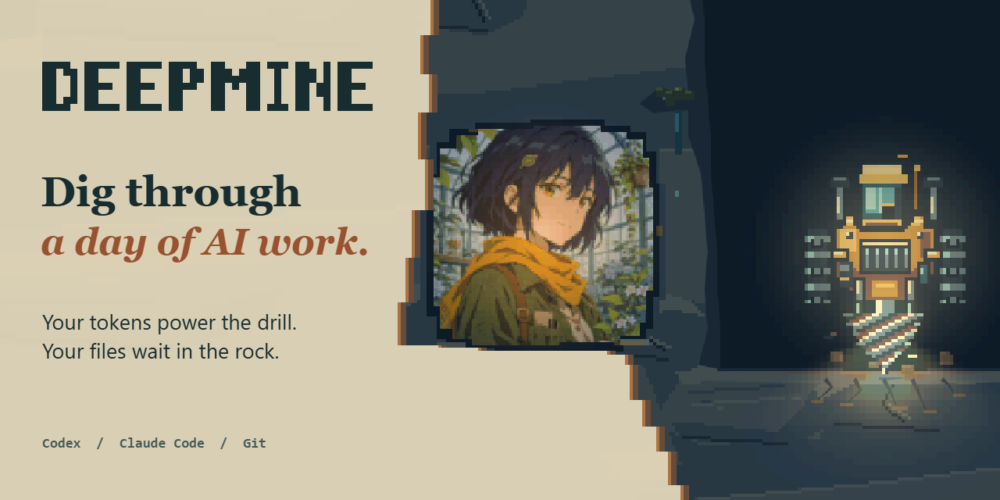
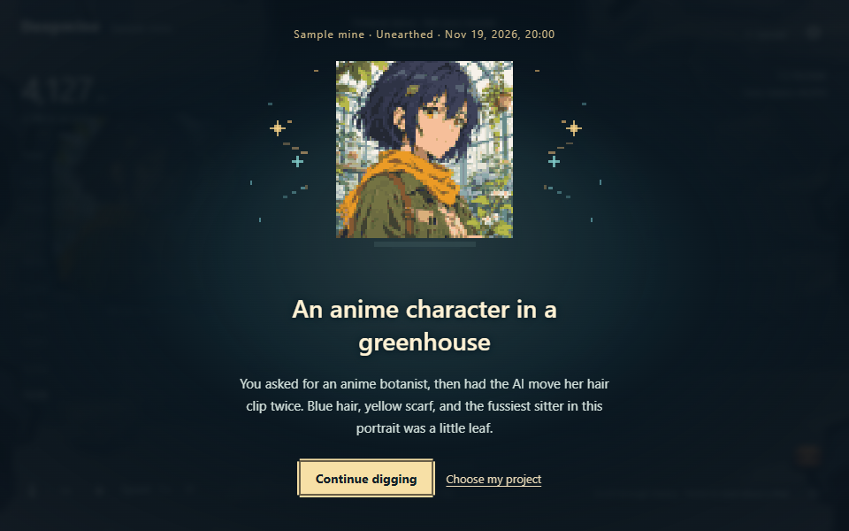
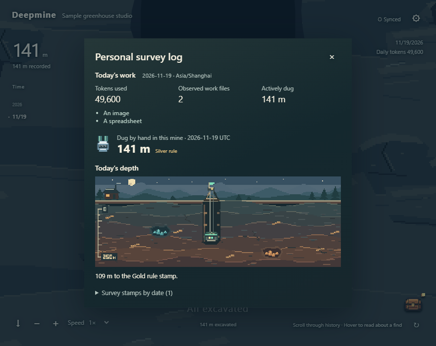

The first find
The rock splits and a botanist in a yellow scarf comes into view. The note with her portrait tells you why it took two revisions to get that tiny leaf into her hair.
Open the gameplay GIF
Inside the mine
The drill stops for individual finds. The survey log lets you see the whole day's work at once.


Discovery
Open the portrait to read the story behind its leaf-shaped hair clip.

Personal survey
A sample greenhouse project recorded 49,600 tokens and two work files. The player dug 141 metres.Release notes
Deepmine is a local pixel-art digging game for your AI projects. Recorded usage and work give the drill more ground to cover. When it hits something you made, the drill stops. Scroll back up the shaft to find it again.